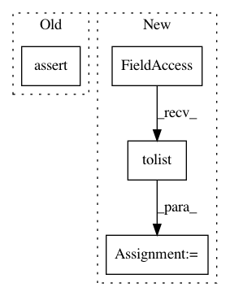

a5ad5689db46c71cdc2e635f155bf3bc171b2803,test/transform/test_target_indegree.py,,test_target_indegree,#,6
Before Change
expected_output = [[1], [0.5], [0.5], [1]]
data = TargetIndegree()(data)
assert data.weight.tolist() == expected_output
After Change
assert out == [[1], [0.5], [0.5], [1]]
data.weight = torch.tensor([1, 1, 1, 1], dtype=torch.float)
out = TargetIndegree()(data).weight.tolist()
assert out == [[1, 1], [1, 0.5], [1, 0.5], [1, 1]]
In pattern: SUPERPATTERN
Frequency: 4
Non-data size: 4
Instances
Project Name: rusty1s/pytorch_geometric
Commit Name: a5ad5689db46c71cdc2e635f155bf3bc171b2803
Time: 2018-05-13
Author: matthias.fey@tu-dortmund.de
File Name: test/transform/test_target_indegree.py
Class Name:
Method Name: test_target_indegree
Project Name: tensorflow/transform
Commit Name: 51a0c5fbe8e236cdb7e58afce66d7639d8fe9a45
Time: 2017-10-20
Author: tf-transform-dev@google.com
File Name: tensorflow_transform/saved/input_fn_maker_test.py
Class Name: InputFnMakerTest
Method Name: _test_build_parsing_transforming_serving_input_fn
Project Name: rusty1s/pytorch_geometric
Commit Name: a5ad5689db46c71cdc2e635f155bf3bc171b2803
Time: 2018-05-13
Author: matthias.fey@tu-dortmund.de
File Name: test/transform/test_cartesian.py
Class Name:
Method Name: test_cartesian
Project Name: rusty1s/pytorch_geometric
Commit Name: a5ad5689db46c71cdc2e635f155bf3bc171b2803
Time: 2018-05-13
Author: matthias.fey@tu-dortmund.de
File Name: test/transform/test_local_cartesian.py
Class Name:
Method Name: test_local_cartesian